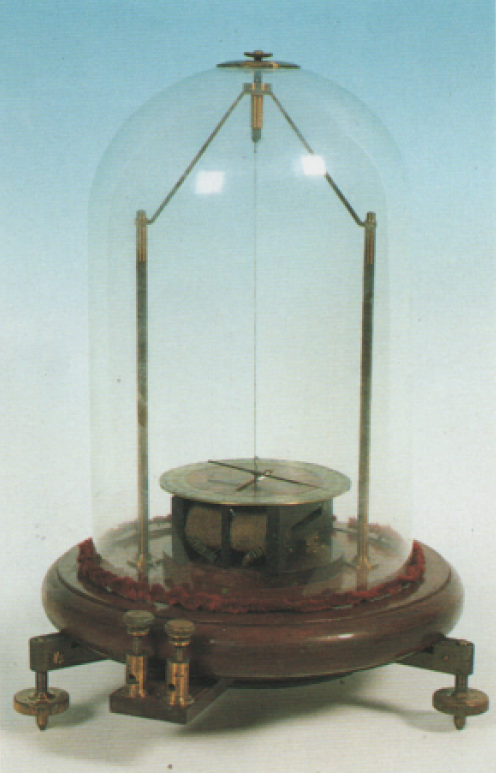

Galvanometro astatico
Scuola di provenienza: Istituto agrario "F. De Sanctis", Avellino
Settore: Elettrostatica
Costruttori: Tecnomasio, Milano, Italia
Materiali: Legno di mogano, ottone, rame, vetro
Accessori: Nessuno
Stato di conservazione: Buono
Descrizione: Lo strumento è costituito da un equipaggio mobile sospeso ad un filo che è formato da una coppia di aghi magnetici paralleli orientati con le polarità opposte. Tale dispositivo detto astatico permette di eliminare buona parte dell'influenza del campo magnetico terrestre sullo strumento. È concepito per misurare la corrente elettrica e funziona grazie ad una bobina attraversata da corrente. Si genera così un campo magnetico che viene rilevato dalla deviazione dell'ago.